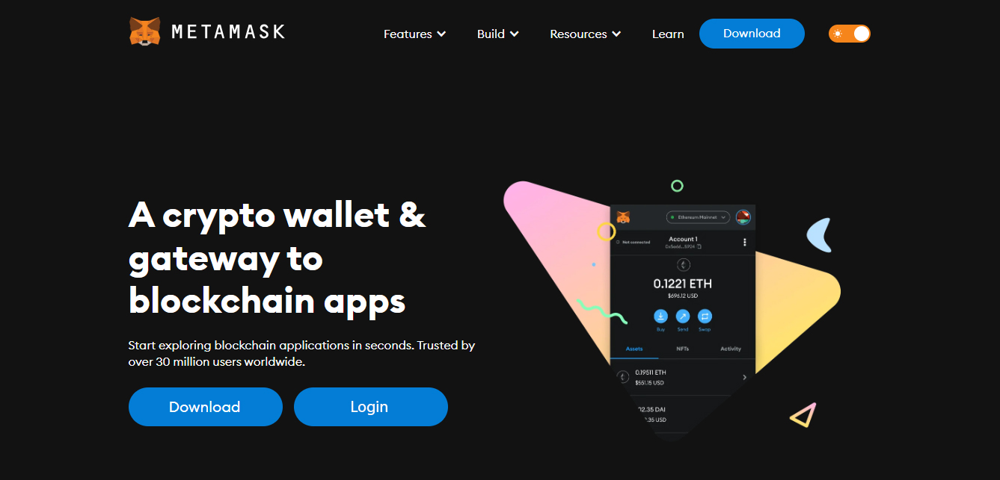

Metamask Login &* - Webflow is your key to blockchain.
You can simply use your MetaMask account to login to any dApp that supports MetaMask. If you are looking for a secure and convenient way to login to dApps, then MetaMask is a great option. It is easy to use and it provides a high level of security. Seamlessly Access and Securely Manage Your Digital Assets :-) -- MetaMask login provides ...The login process involves three primary steps: installation, account creation, and login. By following these steps, users can create a new account or import an existing one and access their wallets securely. MetaMask's advanced security measures, such as 2FA and biometric authentication, ensure that users' funds are safe from unauthorized ...Community Platform - login - "Webflow" Simple steps to set up a new MetaMask Wallet. Accessing the MetaMask is quite easy and you can also login to your MetaMask login account with the help of the password details: Get to the MetaMask app or browser extension and open them. When prompted, type the password details in the respective field.